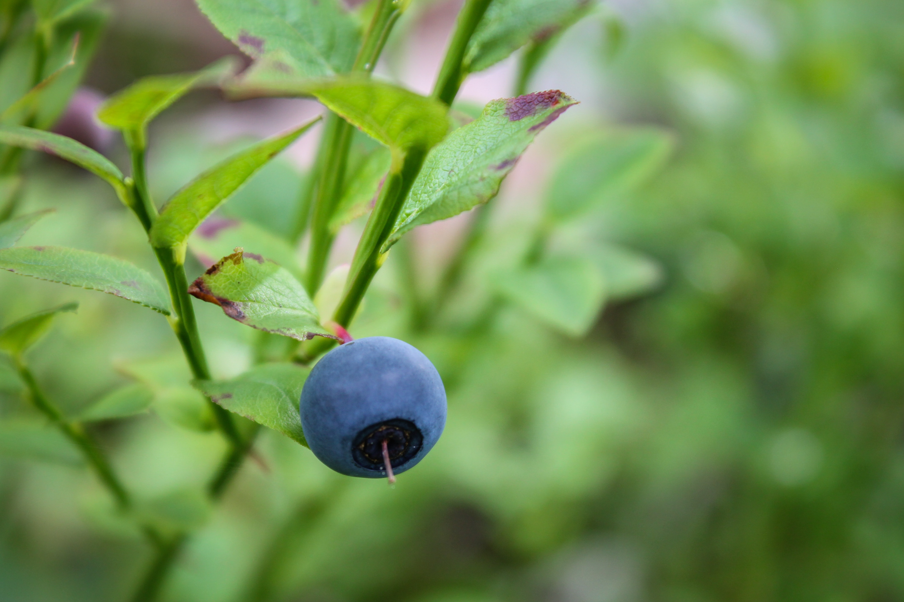

<!DOCTYPE html>
<html lang="en">
    <head>
        <meta charset="utf-8">
        <link rel="preconnect" href="https://fonts.googleapis.com">
        <link rel="preconnect" href="https://fonts.gstatic.com" crossorigin>
        <link href="https://fonts.googleapis.com/css2?family=Urbanist:wght@300;500;600;800&display=swap" rel="stylesheet">
        <meta name="viewport" content="width=device-width, initial-scale=1">
        <link rel="stylesheet" type="text/css" href="./css/style.css">
        <title>Maine Wild Blueberries</title>

    </head>
</html>
<body class="light dark">
    <header>
        <nav>
            <ul class="no-list-style">
            <li><a href="index.html">Home</a></li>
            </ul>
        </nav>
    </header>
    <main>
        <section class="width-700">
            <h1>Everything About Maine Wild Blueberries</h1>
            
            <p class="intro_text">What's so great about Maine Wild Blueberries? Here's everything you need to know!</p>
            <ul id="blueberry-list">
                <li>Wild blueberries are <em>more flavorful</em> than cultivated ones.</li>
                <li>Maine wild blueberries are the second most pollinated crop in America after California almonds.</li>
                <li>Maine wild blueberries contain <em>two times</em> more antioxidants than cultivated berries.</li>
                <li>Maine blueberry icecream is delicious. <a href="https://www.giffordsicecream.com/flavors/maine-wild-blueberry-ice-cream/">Try it!</a></li>
            </ul>
            <p>Oh, here are my <a target="_blank" href="/ps2-tests.html">Problem Set 2 Tests.</a></p>
        </section>
    </main>
    <footer class>
        &copy; Mariele Ventrice, 2021
    </footer>
</body>